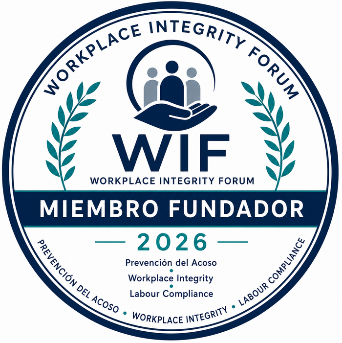

Inicio / Founding Circle 2026
WIF Founding
Circle 2026
Un reconocimiento fundacional · por invitación
Las organizaciones que acompañan el nacimiento de WIF y serán reconocidas como fundadoras.
No es una membresía ordinaria: es un reconocimiento institucional reservado a quienes participan en el momento fundacional de WIF.
Muchas organizaciones se incorporarán a WIF en los próximos años, pero únicamente las fundadoras podrán afirmar que estuvieron presentes desde el principio.
Su contribución permitirá impulsar las primeras iniciativas y consolidar una comunidad comprometida con la protección de la dignidad humana.
Lo que reciben las entidades fundadoras.

Certificado oficial WIF Founding Member 2026.
Sello digital y distintivo institucional de entidad fundadora.
Inclusión en el Directorio Fundacional de Workplace Integrity Forum.
Reconocimiento institucional durante los actos fundacionales y el Congreso Nacional.
Participación en una comunidad destinada a ser referencia del sector.
Una condición excepcional.
La incorporación se realiza exclusivamente mediante invitación. Las organizaciones se identifican atendiendo a su trayectoria, compromiso institucional o potencial contribución.
Directorio fundacional
Próximamente. En esta sección se publicará la relación de organizaciones integrantes del WIF Founding Circle 2026.
Información
Para cualquier consulta puede ponerse en contacto con la Secretaría Técnica.